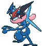
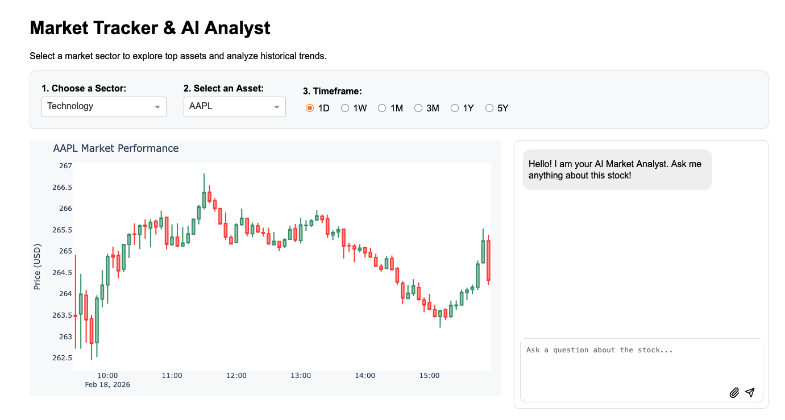

I'm a Computer Science and Economics student at UIUC who loves working at the intersection of data, design, and product. Whether I'm building interactive dashboards, designing user flows in Figma, or digging into research datasets, I care about making technology that's both analytically rigorous and human-centered. I work across Python, Java, C++, and R — and I'm always looking for the next problem to solve.
Developing commercial-ready automated IoT and robotics platforms for chemical analysis and automated sample scanning. Working in an interdisciplinary lab with investor backing to transition research devices into commercial products.
An end-to-end IoT platform where a web dashboard commands a Raspberry Pi to execute a hybrid chemical testing sequence. The edge device uses computer vision to calculate Aluminum/Silicon concentration via colorimetric algorithms and streams results live.
A modern web dashboard and Python backend to control motorized stage scanning. It features a "Smart Scan" workflow, moving across an XY grid and performing autofocus Z-sweeps to synthesize high-resolution panoramas.
Leading product development of a reservation web app for shared kitchen spaces. Redesigned the core booking flow from 5 screens to 3 based on early peer feedback, reducing friction and user drop-off. Currently designing high-fidelity interfaces in Figma and preparing formal user testing sessions with university faculty.
Timeline: March 2026 – Present
Focus Areas: Product Management, UI/UX Design, API Integration, User Testing
A stock dashboard built with Python (Dash + Plotly + yfinance) that displays candlestick charts and includes an AI assistant powered by Gemini to answer market-related questions.

Skills: Data visualization, API integration, UI/UX design, caching, prompt engineering
How to Run:
1. Clone the repo git clone https://github.com/connie4-beep/stock_dashboard.git cd stock_dashboard 2. Create & activate a virtual environment python -m venv venv source venv/bin/activate # Mac/Linux venv\Scripts\activate # Windows 3. Install dependencies pip install -r requirements.txt 4. Add your API key Create a .env file: GEMINI_API_KEY="your_key_here" 5. Run the app python app.py
An analytical product teardown examining the friction between back-end algorithmic dispatch logic and human user experience during time-sensitive, high-stakes trips. Proposed a "trip-lock" feature and transparency alerts to balance marketplace efficiency with rider trust.
Skills: Product Strategy, UX Research, System Architecture Analysis, UI/UX Design
Tools: Figma, Analytical Writing
Detailed breakdown of batched matching algorithms and Before/After UI mockups featured in the full case study.
A comprehensive sales forecasting pipeline for retail inventory optimization. Built in Python, the system cleans departmental sales data across seven categories, performs exploratory analysis to isolate seasonal trends, and feeds processed data into a DeepAR time series model — achieving a MAPE of 13.58% and RMSE of 92.91.
Built for CS 445: Computational Photography — a pipeline that creates hybrid images by combining high-frequency and low-frequency components, producing images that change perception based on viewing distance. Extended with contrast, color, and hue adjustments using OpenCV in HSV and LAB color spaces.
Analyzed the impact of advertising and social media exposure on donor behavior. Cleaned and merged large ZIP-level datasets for county-level analysis, then used statistical models to quantify relationships between demographics, social media engagement, and donation activity.
I'm always open to new opportunities, collaborations, or just a good conversation about data, design, and tech. Drop me a line!
✉ connie4@illinois.edu